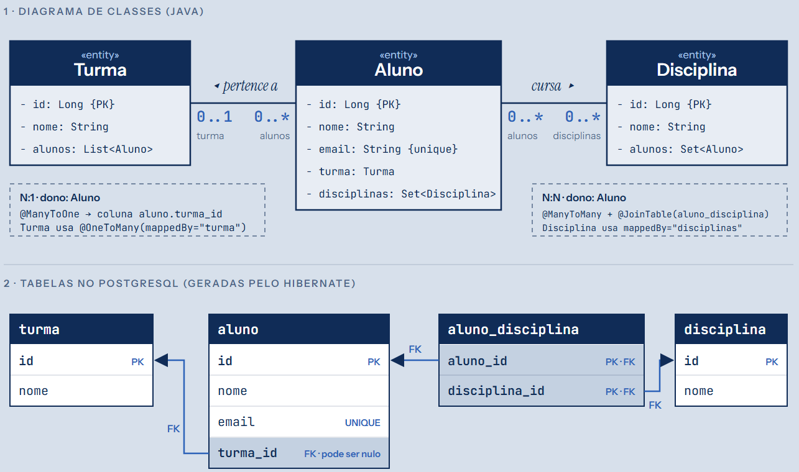
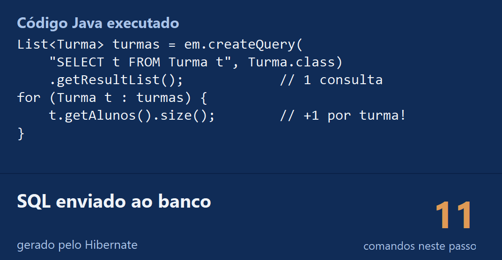
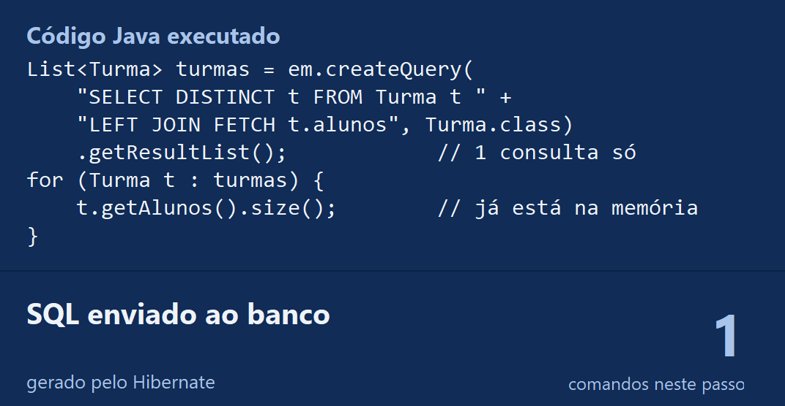

Object-Relational Mapping
Como o código orientado a objetos conversa com as tabelas de um banco relacional
Pergunta-guia: como um objeto
vira uma linha, e volta?
Dois mundos diferentes
A ponte entre eles
Classes viram tabelas
Campos viram colunas
Referências viram chaves
Herança e padrões
Matrícula escolar, ao vivo
Prós, contras, quando usar
Objetos são os contatos do celular, com links entre si; tabelas são fichas numeradas num arquivo de aço.
aluno.getTurma()
.getNome()Sabe que o atributo turma é a coluna turma_id e monta o JOIN com a tabela turma.
SELECT t.nome FROM turma t JOIN aluno a ON a.turma_id = t.id WHERE a.id = 1
Ninguém precisa aprender a língua do outro. Mas quem entende um pouco das duas percebe quando a tradução sai errada.
// cada campo é copiado à mão
String sql = "SELECT id, nome, email"
+ " FROM aluno WHERE id = ?";
PreparedStatement ps =
conn.prepareStatement(sql);
ps.setLong(1, 42);
ResultSet rs = ps.executeQuery();
Aluno a = null;
if (rs.next()) {
a = new Aluno();
a.setId(rs.getLong("id"));
a.setNome(rs.getString("nome"));
a.setEmail(rs.getString("email"));
}
Linhas de código deste exemplo, sem o comentário. Com ORM: Aluno a = em.find(Aluno.class, 42L);
| Diferença | No mundo dos objetos | No banco relacional |
|---|---|---|
| Granularidade | Muitas classes pequenas: Cliente tem um Endereco | Poucas tabelas largas: endereço vira colunas de cliente |
| Herança | Aluno e Professor herdam de Pessoa | Não existe herança entre tabelas |
| Identidade | Mesmo objeto (==) ou mesmo conteúdo (equals) | Mesma chave primária |
| Associações | Referência com direção: aluno.turma | Chave estrangeira sem direção: turma_id |
| Navegação | De objeto em objeto: a.getTurma() | Conjuntos de uma vez, com JOIN |
Vem da engenharia elétrica: com impedâncias diferentes, a energia não passa bem de um circuito para o outro. É como levar um carregador de pinos redondos para um país de pinos chatos: o encaixe não acontece.
O adaptador resolve o encaixe, mas não muda a voltagem: o ORM esconde as diferenças, não as elimina.
Aluno ana = new Aluno();
ana.setNome("Ana Souza");
ana.setEmail("ana@uni.br");
ana.setCurso("SI");
em.persist(ana);INSERT INTO aluno
(nome, email, curso)
VALUES
('Ana Souza',
'ana@uni.br', 'SI');| id | nome | curso |
|---|---|---|
| 1 | Bruno Lima | ADS |
| 2 | Carla Dias | SI |
| 3 | Ana Souza | SI |
O id 3 foi gerado pelo banco e copiado para o objeto: depois do persist, ana.getId() devolve 3.
LocalDate ↔ DATEImplementa a JPA; também existe o EclipseLink
Oficial da Microsoft; consultas com LINQ
Flexível; o Django tem ORM próprio
Gera um cliente tipado a partir de um schema
O ORM do Rails, que deu nome ao padrão
O ORM do Laravel; o Doctrine é a alternativa
Uma classe cujos objetos precisam ser guardados e têm identidade própria: cada um é único e pode ser encontrado de novo.
Alegoria · A secretaria@Entity@Idfinal (o ORM cria proxies)Sim: Aluno, Turma, Pedido, Produto
Não: Endereço (só um valor), um total calculado
@Entity
@Table(name = "aluno")
public class Aluno {
@Id
@GeneratedValue(strategy =
GenerationType.IDENTITY)
private Long id;
@Column(nullable = false,
length = 100)
private String nome;
@Column(unique = true)
private String email;
protected Aluno() { }
}
CREATE TABLE aluno ( id BIGINT AUTO_INCREMENT, nome VARCHAR(100) NOT NULL, email VARCHAR(255) UNIQUE, PRIMARY KEY (id) );
@Entity | vai para o banco |
@Table | nome da tabela |
@Id | chave primária |
@GeneratedValue | o banco gera o nº |
@Column | detalhes da coluna |
O mesmo objeto na memória: duas variáveis, uma coisa só.
Mesmo conteúdo, como gêmeos: parecem iguais, mas são dois.
Mesma chave primária = mesmo registro. É esta que o ORM usa.
| Estratégia | Como funciona | Alegoria |
|---|---|---|
IDENTITY | Coluna auto-incremento do banco | Senha da fila: o banco entrega o próximo número |
SEQUENCE | Objeto SEQUENCE do banco | Talão de senhas, pedido antes de salvar |
TABLE | Tabela auxiliar guarda o próximo valor | Caderno do porteiro: funciona, mas é lento |
UUID | Valor aleatório de 128 bits | Código de rastreio: único sem combinar com ninguém |
O valor é o mesmo, muda a “moeda”, sempre pela mesma tabela de conversão.
Nunca double: BigDecimal ↔ DECIMAL não perde centavos.
int × Integerint nunca é null. Coluna aceita NULL? Use Integer.
@Column(name="nm_aluno", length=150, nullable=false)
Nome, tamanho, nulo, único
@Transient private int idade;
Não vai para o banco
@Enumerated(EnumType.STRING) private Status status;
Grava “ATIVO”, não a posição
@Lob private byte[] foto;
Textos e arquivos grandes
// sem anotação! private LocalDate nascimento;
Mapeado sozinho (JPA 2.2+)
@Convert(converter = CpfConverter.class)
Seu conversor (ex.: CPF)
@Embeddable
public class Endereco {
private String rua;
private String cidade;
private String cep;
}
@Entity
public class Cliente {
@Id @GeneratedValue
private Long id;
private String nome;
@Embedded
private Endereco endereco;
}
O endereço é uma gaveta: organizada, mas só existe dentro do armário (cliente). Sem @Id, sem tabela.
| Na classe | O ORM assume, sem anotação | Anote quando… |
|---|---|---|
class Aluno | tabela aluno | a tabela é TB_ALUNO |
nomeCompleto | coluna nome_completo * | a coluna tem outro nome |
String email | VARCHAR(255), aceita NULL | precisa de NOT NULL ou outro tamanho |
Long id | nada: não adivinha a chave | sempre: @Id é obrigatório |
A costureira já tem o molde M: você só pede ajuste onde o seu corpo é diferente.
* Com a estratégia de nomes do Spring Boot. No Hibernate puro, a coluna fica nomeCompleto.
@Entity
public class Aluno {
@Id @GeneratedValue
private Long id;
private String nome;
@OneToOne
@JoinColumn(name = "carteirinha_id",
unique = true)
private Carteirinha carteirinha;
}
@Entity
public class Carteirinha {
@Id @GeneratedValue
private Long id;
private String codigo;
}
@JoinColumn: qual coluna guarda a FKunique = true: duas pessoas nunca dividem a mesma carteirinha@Entity
public class Turma {
@Id @GeneratedValue
private Long id;
@OneToMany(mappedBy = "turma")
private List<Aluno> alunos;
}
@Entity
public class Aluno {
@Id @GeneratedValue
private Long id;
@ManyToOne
@JoinColumn(name = "turma_id")
private Turma turma;
}
Quem guarda a FK: Aluno. O mappedBy em Turma diz “o mapeamento está em Aluno.turma”, sem criar outra coluna.
@ManyToMany
@JoinTable(
name = "aluno_disciplina",
joinColumns =
@JoinColumn(name = "aluno_id"),
inverseJoinColumns =
@JoinColumn(name = "disciplina_id"))
private Set<Disciplina> disciplinas;
// em Disciplina.java:
@ManyToMany(mappedBy = "disciplinas")
A junção vira a entidade Matricula, com dois @ManyToOne.
aluno_disciplina
| aluno_id | disciplina_id |
|---|---|
| 1 (Ana) | 10 (BD) |
| 1 (Ana) | 20 (POO) |
| 2 (Bruno) | 10 (BD) |
É o diário de classe: só registra quem cursa o quê.
Uni: só um lado conhece o outro.
Bi: os dois se conhecem.
No bidirecional, atualize os dois lados em Java.
O dono é o lado com a FK na tabela. O outro lado usa mappedBy para não criar coluna repetida.
Só um cartório registra a escritura; os outros consultam.
@OneToMany(mappedBy = "pedido",
cascade = CascadeType.ALL, orphanRemoval = true)
private List<ItemPedido> itens = new ArrayList<>();
Alegoria: apagar a pasta apaga os arquivos que estão dentro.
LAZY: o episódio só carrega quando você dá play
+ economiza consultas e memória
− erro se a sessão já fechou
EAGER: baixa a temporada inteira antes da viagem
+ dados sempre à mão
− traz o que talvez nunca seja usado
JOIN FETCH
Um laço dispara, sem ninguém ver, uma consulta por item, em vez de uma única consulta com JOIN.
Cada ida ao banco soma tempo de rede: com muitos itens, a tela fica lenta. É o gargalo mais comum de um ORM mal configurado.
em.getTransaction().begin(); 1 Turma t = em.find(Turma.class, 7L); 2 Aluno a = new Aluno("Ana"); a.setTurma(t); 3 em.persist(a); 4 t.setNome("Turma B"); 5 em.getTransaction().commit();
Atenção: vale para chaves por SEQUENCE. Com IDENTITY, o banco precisa gerar o id, então o INSERT sai já no persist().
Um carrinho de compras: o ORM anota tudo e só passa no caixa no commit.
Herança é nativa: Aluno e Professor reaproveitam tudo de Pessoa, de forma elegante.
O modelo relacional não tem herança: só tabelas, colunas e chaves.
Achatar a árvore de herança em tabelas sem perder integridade, sem redundância exagerada e sem destruir o desempenho de leitura.
Uma tabela para a família toda.
+ leitura rápida, zero JOIN
− colunas NULL para quem não usa
Tabelas normalizadas ligadas por FK.
+ sem NULL, boa integridade
− JOIN em toda consulta
Uma tabela por classe concreta.
+ tabelas independentes
− colunas repetidas; “todas as pessoas” pede UNION
aluno = Aluno.new(nome: "Ana") aluno.save # ele mesmo grava
O aluno leva a própria ficha à secretaria e a arquiva.
Aluno aluno = new Aluno("Ana");
em.persist(aluno); // outro gravaO aluno só preenche; a secretaria arquiva.

Cada aluno tem no máximo uma turma: a coluna aluno.turma_id.
Um aluno cursa várias disciplinas: uma linha em aluno_disciplina para cada.
o mesmo aluno em duas turmas · a mesma disciplina duas vezes · dois alunos com o mesmo e-mail
Java 17 · Hibernate 7.4 · PostgreSQL 17 · Swing
<persistence-unit name="escola">
<class>modelo.Aluno</class>
<class>modelo.Turma</class>
<class>modelo.Disciplina</class>
<properties>
<property value="drop-and-create"
name="jakarta.persistence.schema-generation
.database.action"/>
<property name="hibernate.show_sql" value="true"/>
</properties>
</persistence-unit>
db.properties.| Pacote | Responsabilidade |
|---|---|
modelo | Aluno, Turma, Disciplina (entidades) |
persistencia | fábrica do JPA, conexão, captura do SQL |
negocio | os passos da demonstração (Escola) |
visao | a janela em Swing |
public class MonitorSQL implements StatementInspector {
public String inspect(String sql) {
contador++; // placar da tela
avisarPainel(sql); // painel da direita
return sql; // segue para o banco
}
}

SELECT … FROM turma ORDER BY id -- 1 SELECT … FROM aluno WHERE turma_id = ? -- +1 … mais 9 vezes, uma por turma

SELECT DISTINCT t.id, t.nome, a.id, a.nome, … FROM turma t LEFT JOIN aluno a ON t.id = a.turma_id
Mesmo resultado na tela, 11 idas ao banco contra 1. É o problema explicado no slide 29, agora no nosso projeto.
Nada de copiar coluna por coluna.
Aluno e Turma, não linhas e colunas.
Trocar de banco muda o dialeto, não o código.
Parâmetros vinculados contra SQL injection.
Não relê o que já tem; agrupa gravações.
O mapeamento fica junto da classe.
Sem ler o SQL gerado, não dá para saber por que ficou lento.
Laços que disparam uma consulta por item.
Sessão, ciclo de vida, cascata, carregamento.
Milhões de linhas: SQL direto é melhor.
Transformar cada linha em objeto custa.
Cascata e dirty checking geram SQL escondido.
spring.jpa.show-sql=true) e leia o que o ORM envia.
Vantagens
Controle total das consultas; máximo desempenho em operações pesadas.
Cenários ideais
Relatórios e cargas em massa; consultas legadas complexas.
O preço
Código repetitivo e refatoração frágil.
Vantagens
Muito mais produtividade; integra naturalmente com orientação a objetos.
Cenários ideais
CRUD e cadastros; domínios com muitas regras e classes.
O preço
Risco de N+1 e SQL ineficiente se mal configurado.
O ORM é indispensável, mas nunca substitui conhecer bem o banco relacional e otimizar consultas.
| Conceito | O que é | Em JPA |
|---|---|---|
| ORM | Traduz objetos ↔ tabelas | Hibernate, EclipseLink |
| Entidade | Classe com identidade → tabela | @Entity |
| Identificador | Atributo → chave primária | @Id, @GeneratedValue |
| Atributo | Campo ↔ coluna | @Column, @Transient |
| Objeto embutido | Classe de valor sem tabela | @Embeddable, @Embedded |
| Relacionamento | Referência ↔ chave estrangeira | @OneToMany, @ManyToOne… |
| Dono | Lado que guarda a FK | @JoinColumn · mappedBy |
| Carregamento | Quando os associados são lidos | FetchType.LAZY / EAGER |
| Impedância | As diferenças entre os modelos | o motivo de tudo isso |
Perguntas?
O ORM não substitui saber SQL: ele deixa você usar SQL só quando realmente importa.
FOWLER, M. Patterns of Enterprise Application Architecture. Addison-Wesley, 2002.
BAUER, C.; KING, G.; GREGORY, G. Java Persistence with Hibernate. 2. ed. Manning, 2015.
ECLIPSE FOUNDATION. Jakarta Persistence 3.1 Specification, 2022. Documentação do Hibernate ORM.